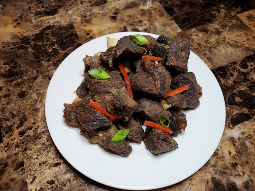

Tasso Kabrit

Picture of a Well Prepared Tasso Kabrit
Tassot Cabrit (Fried Goat Meat) is one of the leading dishes in Haitian cuisine. Prepared with a few simple ingredients, the tender and juicy, crisp, and golden meat pieces are delicious alongside pikliz, Haitian Black Rice, fried plantains, or as part of your Fritay
INGREDIENTS
- 1kg of goat meat (shoulder), (cut into 1 to 3 cm cubes)
- 1/2 cup of shallots, (chopped)
- 3/4 cups of orange juice
- 1 large onion, (chopped)
- 1/2 cup of lime or lemon juice
- 4 to 8 garlic cloves, (chopped)
- 1 green and 1 red bell peppers, (finely chopped)
- 1 cup of bitter orange and lemon juice
- Grinded cloves
- Salt and pepper to taste
- 1 tablespoon of thyme
- 1 teaspoon of parsley
- 1/2 cup of vegetable oil
DIRECTIONS
-
One day prior to cooking your meat, put all ingredients except the oil in a large pot; add water if the amount of juice is insufficient to cover the meat and allow the marinade to sink in overnight in the refrigerator.
-
Drain the mixture and allow the meat pieces to dry a little.
-
In a small pot, add the oil and fry the goat until it is dark on the outside yet tender on the inside.
-
A little piece of advice: As goat meat is usually very tender, it does not need to be boiled prior to frying. However when substituting beef for goat, your meat might need to be pre-cooked (boiling) before the frying step.